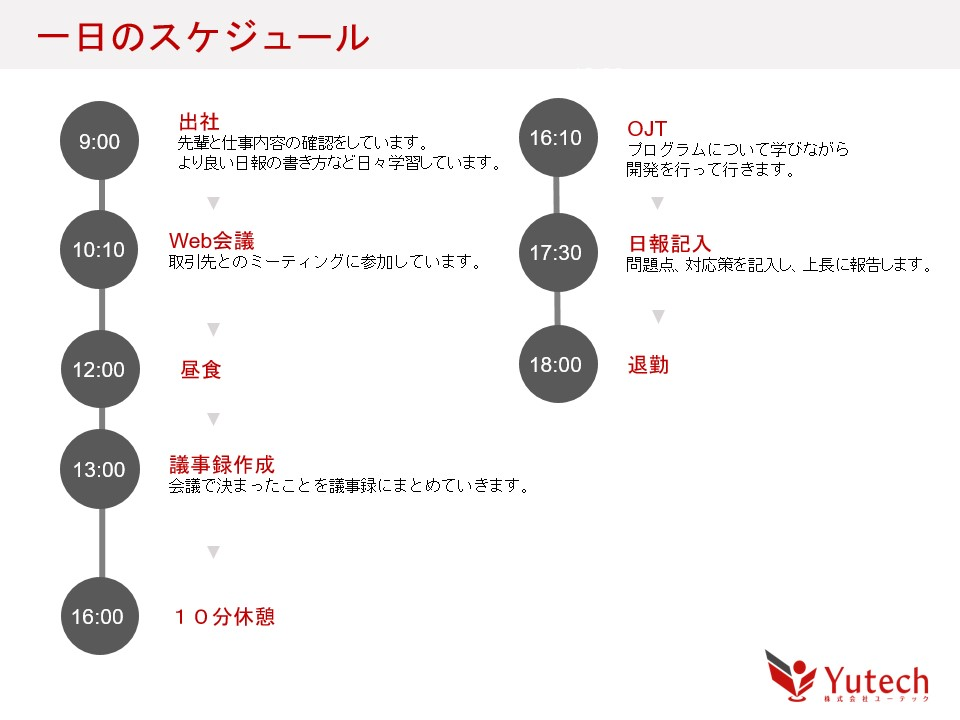

社員の声

I.E
2024年入社 総合政策学部出身
仕事と研修内容を教えてください
研修後、帳票レイアウトの実装を行いました。アシスタントとしてシステム開発に携わることが多く、先輩に指導していただきながら日々技術の習得に励んでいます。 レイアウト実装後は、ドメイン駆動設計という設計手法について書籍を参考に学習しました。大変難しい内容でしたが、社内記事に図を作成しながらまとめることで理解を深めることが出来ました。 その後、学習したドメイン駆動設計を採用したプログラム開発に携わることが出来、知識を身に着けるだけではなく、実践経験を積むことが出来ました。
他にも、ミーティングに参加し、議事録の作成も行いました。議事録をとることで、お客様の業務内容や製造業についての理解を深めています。 加えて、組み合わせテストチェックリストや連動テストチェックリストの作成をしています。テスト項目の漏れがバグにつながってしまうため、仕様書を確認しながら丁寧に作るよう心がけています。
IT未経験のため、何が分からないのかわからず行き詰ってしまうこともありますが、その際は、どういった方法で調査すればよいか先輩に相談しています。 また、入社前から基本情報技術者試験の勉強を始め、入社後合格することが出来ました。現在は、応用情報技術者試験に向けて勉強をしてます。
1日のスケジュールを教えてください
入社・志望理由を教えてください
文系にIT業界は向いていないだろうと考えていましたが、大学で行われた企業説明会でユーテックの事業内容や求める人物像を聞き、対人能力が重要であることを知りました。 文系IT未経験だからこそ、ユーテックで成長できるとを知り、入社を決めました。